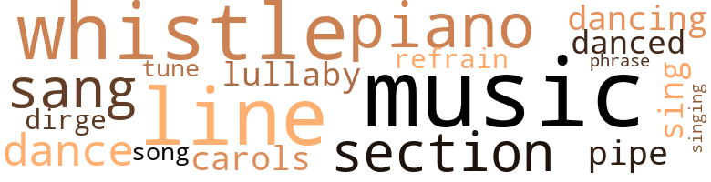
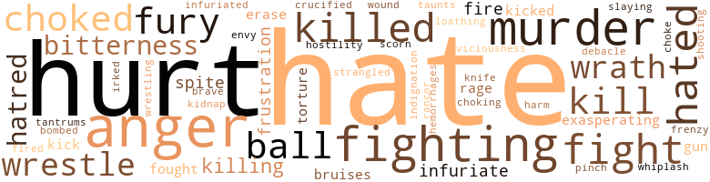

38 music-related terms matched in this text.
Most frequent terms in this topic: music (5); piano (4); whistle (4); section (3); line (3)

carol.n.01
Definition: joyful religious song celebrating the birth of Christ
| word |
sentence |
| carols |
On Main Street the bells of the Salvation Army intermingled with the carols and the hurly-burly of last minute shoppers . |
dance.n.01
Definition: an artistic form of nonverbal communication
| word |
sentence |
| dance |
Come on , Pokey , let 's dance . " |
| dance |
But there was Pokey Jenkins coming toward her for a dance . |
dance.v.02
Definition: move in a pattern; usually to musical accompaniment; do or perform a dance
| word |
sentence |
| dancing |
Already little waves of heat were dancing about in obscure patterns on the sweltering concrete . |
dance.v.03
Definition: skip, leap, or move up and down or sideways
| word |
sentence |
| danced |
Her eyes danced like liquid pools of oil beneath long-fringed lashes that needed no mascara . |
dirge.n.01
Definition: a song or hymn of mourning composed or performed as a memorial to a dead person
| word |
sentence |
| dirge |
Outside the wind moaned and howled a dreary dirge . |
lullaby.n.01
Definition: a quiet song intended to lull a child to sleep
| word |
sentence |
| lullaby |
While they ate , the water from the lake lapped against the shore and seemed to sing them a lullaby of the sea . |
music.n.01
Definition: an artistic form of auditory communication incorporating instrumental or vocal tones in a structured and continuous manner
| word |
sentence |
| music |
His low , resonant voice was like music . |
| music |
A steady flow of music poured forth from the loudspeaker at Moore 's mortuary . |
| music |
Pokey was pouring nickels into the juke box in the corner where a steady flow of music , torrid and syncopating , beat out soft , rhythmic tempos . |
| music |
The music was strange but enchanting to Helene 's ears . |
| music |
Don Mason 's band beat out hot , torrid music for swaying hips and pulsating movements of thumping hands and feet . |
| Music |
Music and noise were in the background . |
phrase.n.02
Definition: a short musical passage
| word |
sentence |
| phrase |
A phrase Mimi had often repeated kept running through Helene 's mind . |
piano.n.01
Definition: a keyboard instrument that is played by depressing keys that cause hammers to strike tuned strings and produce sounds
| word |
sentence |
| piano |
The beautiful strains of " Liebestraum " came from the piano , in the corner , where Pamela Ann Dixon sat imitating Jose Iturbi . |
| piano |
All four women were watching Claire who had walked over to the piano and stood watching her best friend 's fingers move across the ivories . |
| piano |
A tall secretary with intricately carved designs on the doors and a small upright piano stood in two corners . |
| piano |
He won that piano as a prize once in a contest . |
pipe.n.04
Definition: a tubular wind instrument
| word |
sentence |
| pipe |
The smoke billowed out through the cracked pipe and fdled the room with its acrid odor . |
refrain.n.01
Definition: the part of a song where a soloist is joined by a group of singers
| word |
sentence |
| refrain |
She could hear the lonely refrain of the funeral song all around her . |
section.n.01
Definition: a self-contained part of a larger composition (written or musical)
| word |
sentence |
| section |
Three years of handling precious money that bought me a house in the best Negro residential section of town . |
| section |
You know how vulger and trashy those people over there in the slum section are . |
| section |
I should think that the improving of any section of the city would come under the jurisdiction of another department anyway . |
sing.v.02
Definition: produce tones with the voice
| word |
sentence |
| sang |
" Whoopee , " Stephanie sang out . |
| sang |
" Chinch is ready for school , " she sang out . |
| sang |
" Why , good morning , " she sang out in her lilting Swedish voice . |
| sing |
While they ate , the water from the lake lapped against the shore and seemed to sing them a lullaby of the sea . |
singing.n.01
Definition: the act of singing vocal music
| word |
sentence |
| singing |
Tonight as she slipped into a sheer green dress picked up in a bargain basement , there were stars in her eyes and her heart was singing . |
song.n.01
Definition: a short musical composition with words
| word |
sentence |
| song |
She could hear the lonely refrain of the funeral song all around her . |
tune.n.01
Definition: a succession of notes forming a distinctive sequence
| word |
sentence |
| line |
Helene glanced up at the pretty pink faille dress and the lovely amber skin with the red petulant mouth pressed into the thin , straight line she knew so well , and thought , " What a pity those good looks are so wasted . " |
| lines |
She was shocked at the tiny network of lines about her eyes . |
| line |
Do n't give me that innocent line , baby , " he spat . |
| line |
Watching the long line of cars crawl along headed for the other part of town , she wished desperately that she was in one of them , going across the river and never setting foot in West Bottoms again . |
| tune |
" Heavenly Father , " she mumbled , " this poor child must have become very backward indeed , out of tune and out of touch with the whole world . |
whistle.v.01
Definition: make whistling sounds
| word |
sentence |
| whistle |
He was setting up everybody in the Black Cat and turned to call to Slim , the bartender , to bring some more beer to his table in the back when he gave a low whistle and walked right up to her . |
| whistle |
The shrill blast of the packing house whistle proclaimed six o'clock . |
| whistle |
The packing house whistle shrilled the hour of six , a signal for the change of shifts in the wartime set-up . |
| whistle |
A truck rumbled by and the blast of the packing house whistle proclaimed the hour of five . |
145 violence-related terms matched in this text.
Most frequent terms in this topic: hate (13); hurt (8); fighting (7); anger (6); murder (6)

abhorrence.n.01
Definition: hate coupled with disgust
| word |
sentence |
| loathing |
He read the loathing in Helene 's eyes . |
anger.n.01
Definition: a strong emotion; a feeling that is oriented toward some real or supposed grievance
| word |
sentence |
| anger |
That was a touchy subject with them and Bart felt anger rising in him again . |
| anger |
All the revulsion that lay dormant welled up in her and in a moment of fierce anger she lashed out , " Why do n't you leave here and never come back . |
| Anger |
Anger swept over her like a cloudburst , swift and destructive . |
| anger |
She struck back with all the strength that comes with maddening anger . |
| anger |
Then anger burst forth . |
| anger |
She felt anger at Susie Brown for waiting all this time and not engaging a doctor . |
| anger |
Looking at the sweat stand out on the brown skin that had taken on an ashen pallor , Helene felt the anger go out of her , and as the agonized eyes searched hers appealingly , she knew that she must get help , and get it quickly . |
bleeding.n.01
Definition: the flow of blood from a ruptured blood vessel
| word |
sentence |
| hemorrhages |
Dr. Paul Dulaine handed the squalling infant to Edda Levine and worked frantically to stave off the hemorrhages that contorted Susie 's body in horrible convulsions . |
bombard.v.02
Definition: throw bombs at or attack with bombs
| word |
sentence |
| bombed |
It was four months since Pearl Harbor had been bombed and Helene was glad . |
bruise.n.01
Definition: an injury that doesn't break the skin but results in some discoloration
| word |
sentence |
| bruises |
His keen sense of observation took in the bruises beneath the make-up . |
| bruises |
Helene managed to go to her room early in the morning and late at night so she could conceal the bruises . |
contemn.v.01
Definition: look down on with disdain
| word |
sentence |
| scorn |
Claire did n't care so much for Chinch , but her proud little heart deeply resented the scorn shown by Jake because she knew that they were in the same category as the Browns . |
craze.n.02
Definition: state of violent mental agitation
| word |
sentence |
| frenzy |
CLAIRE yanked drawers and doors open in wild frenzy , frantically throwing dresses , lingerie , and shoes into the smart luggage set . |
crucify.v.01
Definition: kill by nailing onto a cross
| word |
sentence |
| crucified |
She felt old , defeated , crucified , and bad . |
envy.n.01
Definition: a feeling of grudging admiration and desire to have something that is possessed by another
| word |
sentence |
| envy |
Wherever she went people paused to stare in admiration or envy . |
erase.v.01
Definition: remove from memory or existence
| word |
sentence |
| erase |
He groped for words to erase the stunned dejection from Helene 's face . |
| erase |
Paul wanted to do something or say something to erase the impression that he had been referring to what she was wearing now . |
ferociousness.n.01
Definition: the trait of extreme cruelty
| word |
sentence |
| viciousness |
" Other limes my soul bleeds for the innate viciousness and cruelty of your nature . " |
fight.n.02
Definition: the act of fighting; any contest or struggle
| word |
sentence |
| fighting |
Well , well , this pretty little Marlowe girl fighting ? |
| fighting |
" This fighting and wrangling is wearing me to a frazzle . |
fight.n.05
Definition: a boxing or wrestling match
| word |
sentence |
| fight |
Helene tipped to the bed and saw the gallant fight her mother was making for a life so far gone . |
fight.v.02
Definition: fight against or resist strongly
| word |
sentence |
| fight |
Helene , for God 's sake , listen to reason , nobody in this whole wide world can fight a love as strong as ours and win . |
| fought |
She fought back but her feeble efforts only served to infuriate him more . |
| fighting |
She was fighting for self-control . |
| fought |
The thing she had fought for , schemed for , risked everything decent and sacred for culminated into that one moment . |
| fighting |
Irving lay still and waxen , fighting valiantly for his life . |
| fighting |
Suddenly it dawned on her that Irving was on the witness stand , fighting for his life . |
| fighting |
I 'm going to give my children at least a fighting chance in life , and I hope it 's not too late to give myself one too , " she added emphatically . |
| fight |
Her heart leaped , and she tried to fight the elation she felt at his nearness . |
| fight |
We have to fight it and we must n't be alone together . |
| fighting |
They were facing each other , each fighting for the iron control that should belong to the decent and honest . |
| fight |
I tried to fight it , darling , I tried . |
fit.n.01
Definition: a display of bad temper
| word |
sentence |
| tantrums |
Urna Bevenue had one of her tantrums today , and , Paul , the strain of parting from you , the realization of the hopelessness of continuing our affair - the bills - the worry - " She spread her hands in a futile gesture . |
frustration.n.03
Definition: a feeling of annoyance at being hindered or criticized
| word |
sentence |
| frustration |
One blustery March day when everyone was out to lunch , Bishop Bevenue , in a rare moment of frustration , had let down his reserve and had given Helene a glimpse into his soul . |
| frustration |
She saw in this girl the smoldering frustration , bitterness , and rancor of years , and her mind raced about for some way to draw her out , to relieve her pent-up emotions , and to give her hope and confidence again . |
fury.n.01
Definition: a feeling of intense anger
| word |
sentence |
| fury |
She sensed the danger in the cold fury of Bart 's manner . |
| fury |
In a burst of savage fury , he struck her full in the face . |
| rage |
Her face was livid with rage , her blue eyes like slits of ice as she poured out her wrath on Mimi . |
| fury |
The hatred and fury in the drunken madness was trans - mitted over the waves . |
| fury |
Blind , unreasoning fury shook Helene . |
| rage |
" I was waiting outside the Bronze Pony when Tiger came out in a rage at Irving Van Chinn . |
gag.v.06
Definition: cause to retch or choke
| word |
sentence |
| choke |
She felt hysteria rising in her voice , coming up into her throat and threatening to choke her , hut she was powerless to control it . |
| choked |
" Listen , baby , " she began in a choked voice . |
| choked |
He answered in a serious , choked voice , " I 'll never tire of her , but I promise . " |
| choking |
She felt like she was choking . |
| choked |
" Take care of the kids , " he choked . |
| choked |
Tears welled up , but she choked them down and replied , " I know , I 'll have to get something to wear . |
gall.v.02
Definition: irritate or vex
| word |
sentence |
| irked |
" But , Mabel , " Helene interrupted , irked at the mention of West Bottoms , " he 's not responsible for that . |
gun.n.01
Definition: a weapon that discharges a missile at high velocity (especially from a metal tube or barrel)
| word |
sentence |
| gun |
The gun lay in his open hand on the seat . |
| gun |
" As yet , you have no way of knowing what the gun battle was about . |
harm.v.01
Definition: cause or do harm to
| word |
sentence |
| harm |
It ca n't harm anyone . " |
hate.n.01
Definition: the emotion of intense dislike; a feeling of dislike so strong that it demands action
| word |
sentence |
| hate |
There was pleasure and hate in her shrill , rasping voice . |
| hatred |
As she moved on through the crowd , Urna gave her a look of pure hatred . |
| hate |
Then remembering her social position in town , she leaned down and in a voice full of venom and hate , warned , " Do n't show that baby around this town . |
| hatreds |
It quickly became a melting pot of the very poor of all nationalities where hatreds and bitterness rankled the heart and flared out intermittently in street brawls and murders . |
| hatred |
The hatred and fury in the drunken madness was trans - mitted over the waves . |
hate.v.01
Definition: dislike intensely; feel antipathy or aversion towards
| word |
sentence |
| hate |
I mean I hate to see you go and I know all the others will be as sorry as I am . " |
| hate |
" I do n't want to call his home , I hate to hear her say so smug and confident , This is Mrs. Dulaine . ' " |
| hate |
Oh , I hate you ! " |
| hated |
Helene hated herself for needing work so des - perately . |
| hated |
She hated herself for feeling inferior . |
| hate |
" I hate to keep Paul waiting . " |
| hate |
I hate you , Bart , " she sobbed . |
| hates |
When she found her voice she lashed out , " That woman hates me and for what cause , I ca n't imagine . |
| hated |
Edda hated to probe but that was n't quite what she wanted to get at . |
| hate |
Personally , I hate to see my sister just like the masses of educated Negroes , filled with bigotry and a false conception of your so-called culture and intelligence . |
| hate |
" I 'd hate to be the only one sleeping if breakfast is ready and another trip is planned , " she thought . |
| hate |
I hate Van Chinn . |
| hated |
At last she had the power to blacken , besmear , tear to shreds , and stamp in the dust the character of the woman she so violently hated . |
| hate |
" I hate Mother for this . |
| hate |
I hate her . |
| hate |
God knows I hate to touch it . " |
| hated |
Helene hated the house and the ugly , old shacks that went unpainted year after year in the squalid neighborhood . |
hostility.n.01
Definition: a hostile (very unfriendly) disposition
| word |
sentence |
| hostility |
Helene , dressed simply in a green linen skirt and white blouse which had a plunging neckline that accentuated the provocative curves of her body , was aware of the admiration in the eyes of the men and the subtle hostility of the women . |
hurt.v.04
Definition: cause damage or affect negatively
| word |
sentence |
| hurt |
I would n't have had the chance to hurt so many persons , and in the end ruin myself . " |
indignation.n.01
Definition: a feeling of righteous anger
| word |
sentence |
| Indignation |
Indignation and resent - ment welled up anew as she looked across the room with its peeling plaster and paint to the old wooden table , icebox , and cheap , faded linoleum all of which defied her efforts to make it pleasant and livable . |
infuriate.v.01
Definition: make furious
| word |
sentence |
| infuriate |
That calm , cultured voice never failed to infuriate her . |
| infuriated |
This infuriated him . |
| exasperating |
Bart 's indifference to his family 's welfare and his inces - sant drinking was exasperating beyond description . |
| exasperating |
IT WAS exasperating to Paul to have to keep drawing her back to him . |
| infuriate |
She fought back but her feeble efforts only served to infuriate him more . |
injury.n.01
Definition: any physical damage to the body caused by violence or accident or fracture etc.
| word |
sentence |
| hurt |
Helene felt hurt and shaken as she answered , " No , thank you , I wanted to ask about a prescription . " |
| hurt |
That hurt and Janice Carter , fearing that Pokey would really get mad and leave without buying her some barbecue , intervened . |
| hurt |
His lips parted in a brilliant smile and a hurt , deep and anguished , filled her heart . |
| hurt |
Seeing the hurt expression on Mimi 's face she hastened to explain , " I know you did the best you could for me . |
kick_back.v.02
Definition: spring back, as from a forceful thrust
| word |
sentence |
| kicked |
Laquel was wide-eyed and fearful , and Roger and Cinch , cold and disheartened from the events of the morning , kicked the dirt . |
| kicked |
" That 's my meat you feeding hem , you steal that too , " he shrieked , " You black - " He kicked hard in the dirt where Chinch had been a moment before . |
| kick |
Helene caught his arm and pleaded , " Mr. Jaborsky , I 'm sorry , but do n't kick him . " |
| kick |
" Decent folk do n't even kick dogs when they 're down . |
kidnap.v.01
Definition: take away to an undisclosed location against their will and usually in order to extract a ransom
| word |
sentence |
| kidnap |
Mrs. Spears lives up there on Sycamore not far from her and she says she never has anything to do with the neighbors and keeps those little ole kids in the backyard all the time like they are scared somebody will kidnap them and - " " Aw , shut up , " Pokey snapped . |
kill.v.10
Definition: cause the death of, without intention
| word |
sentence |
| kill |
" You lay a finger on Claire and I 'll kill you , so help me God . " |
| kill |
I 'm telling you , I 'm going to kill that bastard . |
| kill |
I 'm going to kill you too , if it 's the last thing on earth I do . " |
| killed |
That man got a nasty stab wound tonight in that awful argument and could have been killed . |
| killing |
You 're only bluffing about killing me , too . " |
| killed |
Italian gangster killed over colored businesswoman . " |
| killed |
She was a wicked woman , she was , to get my Tiger killed . " |
| killed |
Urna , I 'm through , you finally killed the last vestige of respect I had left for you . " |
| killing |
" Your honor , " the prosecutor roared , " I 'm trying to show by the defendant 's own words his motive for killing Tiger Derocca . " |
| kill |
He said they had an argument over something and he swore he was going to kill him . " |
| killing |
" Do n't worry , Pearl , I 'm not thinking of killing myself . |
| killed |
Not waiting for an answer , she went on , " I loved him once , so very much , but it 's gone - dead - little by little he killed every - thing I felt for him . |
knife.n.02
Definition: a weapon with a handle and blade with a sharp point
| word |
sentence |
| knife |
Outside the mist and fog was thick enough to cut with a knife . |
malice.n.01
Definition: feeling a need to see others suffer
| word |
sentence |
| spite |
She knew she had a friend in Bishop Bevenue and as long as lie was owner of the Register , she 'd work in spite of Urna 's unpleasantness . |
| spite |
In spite of the carefully applied make-up , faint traces of blue were visible around her eyes and mouth . |
murder.n.01
Definition: unlawful premeditated killing of a human being by a human being
| word |
sentence |
| slaying |
" Well let me tell you something , you took my money to help buy this house and I 'm slaying right here , see ? |
| murders |
It quickly became a melting pot of the very poor of all nationalities where hatreds and bitterness rankled the heart and flared out intermittently in street brawls and murders . |
| murder |
The Jaborskys were retreating across the yard , yelling threats of murder and the police at Helene and the boys . |
| murder |
His face was livid , there was murder in his eyes . |
| murder |
The coffee can Pearl took from Helene the night of the murder remained untouched . |
| murder |
She told of the events leading to the murder of Tiger Derocca . |
| murder |
" Now , Mr. Van Chinn , tell the court in your own words how you came to be at the scene of the murder on the morning of January thirteenth at four o'clock . " |
| murder |
Irving was acquitted of the murder of Tiger Derocca . |
musket_ball.n.01
Definition: a solid projectile that is shot by a musket
| word |
sentence |
| ball |
Across the street a little girl ran after a ball while another trundled a bicycle into a yard , both intent on getting inside . |
| ball |
He plays ball with his rivals . |
| ball |
Only me and my pal Toni Bacconi do n't want to play ball with him . |
| ball |
I 'm warning you , if you do n't play ball with me , " his voice dropped to a hoarse whisper , " you 'll ride down one morning and there wo n't be no Pony , there wo n't be no Van Chinn and that beautiful daughter of yours may not live to graduate in June . " |
open_fire.v.01
Definition: start firing a weapon
| word |
sentence |
| fire |
Maybe the reason she never is in any of these joints is because she has to be home with her kids , or maybe them dickety niggers she works for will fire her or something . |
| fire |
Of course you understand after tonight she will hire and fire at her will . |
| fired |
" What , ladies and gentlemen of the jury , would any man do when he was fired upon , knowing it was his life or the assailant 's but try and save his own ? |
pain.v.02
Definition: cause emotional anguish or make miserable
| word |
sentence |
| hurt |
" Ah hurt my finger on the job yestiddy an am on my way down heah to Doc Summers to look at it , " he continued good - naturedly . |
| hurt |
You ca n't hurt me . " |
| hurt |
" Tiger wo n't hurt you if you do as I say . " |
pinch.n.02
Definition: an injury resulting from getting some body part squeezed
| word |
sentence |
| pinch |
She giggled and gave Laquel a playful pinch on the arm . |
resentment.n.01
Definition: a feeling of deep and bitter anger and ill-will
| word |
sentence |
| bitterness |
She saw in this girl the smoldering frustration , bitterness , and rancor of years , and her mind raced about for some way to draw her out , to relieve her pent-up emotions , and to give her hope and confidence again . |
| rancor |
She saw in this girl the smoldering frustration , bitterness , and rancor of years , and her mind raced about for some way to draw her out , to relieve her pent-up emotions , and to give her hope and confidence again . |
| bitterness |
It quickly became a melting pot of the very poor of all nationalities where hatreds and bitterness rankled the heart and flared out intermittently in street brawls and murders . |
| bitterness |
" But their lives could n't have been like ours , " she thought with bitterness . |
shooting.n.02
Definition: killing someone by gunfire
| word |
sentence |
| shooting |
The shooting was on everybody 's lips . |
strangle.v.01
Definition: kill by squeezing the throat of so as to cut off the air
| word |
sentence |
| strangled |
" It is white , " she shrieked in a tight , strangled voice . |
thrashing.n.01
Definition: a sound defeat
| word |
sentence |
| debacle |
But time had wrought its inevitable debacle of change , and what once had been the finest and most aristocratic neighborhood in town became a struggling second best . |
torment.v.01
Definition: torment emotionally or mentally
| word |
sentence |
| torture |
All the agony of the last few days were bliss com - pared to the soul searing torture of the moment . |
| torture |
It was hard to force her lips to move through the agony of torture . |
twit.n.02
Definition: aggravation by deriding or mocking or criticizing
| word |
sentence |
| taunts |
The cruel taunts of the chil - dren at the parish school were still ringing in her ears . |
weather.v.01
Definition: face and withstand with courage
| word |
sentence |
| brave |
Susie Brown , old and resigned at twenty-eight , and poor little brave Chinch wanting a dog so desperately while his daddy sat sodden in liquor . |
whiplash.n.01
Definition: an injury to the neck (the cervical vertebrae) resulting from rapid acceleration or deceleration (as in an automobile accident)
| word |
sentence |
| whiplash |
She was wondering how a body so attractive could harbor such a warped , cruel , ignorant mind when the curt words leaped out at her like a whiplash . |
wound.n.01
Definition: an injury to living tissue (especially an injury involving a cut or break in the skin)
| word |
sentence |
| wound |
That man got a nasty stab wound tonight in that awful argument and could have been killed . |
wrath.n.01
Definition: intense anger (usually on an epic scale)
| word |
sentence |
| wrath |
Frank , hen-pecked and brow-beaten , rather than incur his wife 's wrath , quietly corrected articles or surrep - titiously laid them on Helene 's desk with a finely printed " rewrite please " at the top of the page . |
| wrath |
Her face was livid with rage , her blue eyes like slits of ice as she poured out her wrath on Mimi . |
| Wrath |
Wrath was rampant in every fiber of his being . |
wrestle.v.01
Definition: combat to overcome an opposing tendency or force
| word |
sentence |
| wrestle |
She tried to wrestle free of his grasp , but her efforts only intensified his grip on her arms . |
| wrestle |
Her resolution to wrestle from life a place in the sun for her children was intensified as she left his office and walked from the elevator to the street . |
| wrestle |
" Some folks are able to wrestle the things they want from life through hard work , maneuvering , or just sheer luck , while other folks , just as smart and as ambitious , plod along in the same old rut year after year and end up in Potter 's Field . |
| wrestling |
You 're hardly the type one would expect to see wrestling with hunks of meat in a packing plant . |
60 religion-related terms matched in this text.
Most frequent terms in this topic: God (19); heaven (7); church (6); temples (5); devil (3)

church.n.02
Definition: a place for public (especially Christian) worship
| word |
sentence |
| church |
Hazel went on piously , " Why they have never been to church for Sunday school or vesper services . |
| church |
Suppose they have n't been to church , have you or Hazel invited them ? |
| church |
" You must come to church sometimes , " he invited . |
| church |
Join a church again , honey . " |
| church |
The few church folk were huddled around Helene . |
church.n.04
Definition: the body of people who attend or belong to a particular local church
| word |
sentence |
| church |
My family did n't exactly live in the slums , but we were certainly as poor as church mice . " |
| Church |
" Honey , I 'm a member of the Holiness Church . " |
| churches |
Fine churches and schools towered majestically above wide , sweeping lawns . |
curate.n.01
Definition: a person authorized to conduct religious worship
| word |
sentence |
| pastor |
I called my pastor , Elder Johnson . |
eden.n.01
Definition: any place of complete bliss and delight and peace
| word |
sentence |
| heaven |
I have always been religiously inclined and believe there is no greater work under heaven than the saving of men 's souls , the healing of wounded spirits , the mending of broken hearts , and giving hope to the dying and outcast . " |
| heaven |
" Well , for heaven 's sake , Ernest , why should our talking about them affect you so ? " |
| heaven |
Frank , indignant and humiliated shouted , " For heaven 's sake , Urna , do n't you have any - er , delicacy of perception ? |
| heaven |
" For heaven 's sake ! " he exclaimed . |
| heavens |
High above the sun rode brilliantly across the heavens . |
| heaven |
You threw me out , divorced me - " " Oh , for heaven 's sake , Bart , why call me up at this time of morning to go over all that again ? " |
| Heavens |
" Heavens no . |
| heaven |
The minister talked of the joys of heaven , the love of the great Savior for mankind , and the power of prayer to com - fort and heal , when all earthly panaceas failed . |
god.n.03
Definition: a man of such superior qualities that he seems like a deity to other people
| word |
sentence |
| God |
God has been good to me . |
| God |
Helene was too overcome with gratitude to say anything except , " Thank you , sir , " and to whisper inwardly , " Thank you , Lord God . " |
| God |
You got to be sweet and good , do right , and God will make a way for you . |
| God |
That 's what I always told Helene and you see , God has made a way for her . " |
| God |
" I ai n't seen you in God knows when girl , " he chuckled , his big eyes intently searching her face . |
| God |
" Oh , for God 's sake , Lucinda , hush up , ai n't no need for us to let her spoil our party . |
| God |
One of these days God 's going to deal you some sho nuff misery . |
| God |
I knew then that God had made it possible for me to carry out my life 's work . |
| God |
If you do n't care about yourself , think of " Aw , for God 's sake , " he screamed , " to hell with all those stuffed shirts . |
| God |
" He 's as hungry as ever , but thank God he has a spark of pride . " |
| God |
Helene , for God 's sake , listen to reason , nobody in this whole wide world can fight a love as strong as ours and win . |
| God |
Edda 's eyes flashed fire , " I ca n't understand what happens to a man when the poison of the slums taints his soul and he loses respect for family and God . |
| God |
" I might as well face it , " she told the reflection in the mirror , " I 'm getting old , but on ' Smugglers ' Hill , ' thank God , and not on Water Street . " |
| God |
God shore don like ugliness . |
| God |
God 's got his eyes on 'em . " |
| God |
God knows I hate to touch it . " |
| God |
" Yes , for God 's sake , hurry . " |
| God |
He prayed earnestly for her and for the peace of God to abide with her . |
| God |
In her utter loneliness she sought the God of Elder Johnson and Pearl . |
heaven.n.02
Definition: the abode of God and the angels
| word |
sentence |
| heaven |
She wanted to remind him of the thousand humiliations and indignities she had suffered because of his treatment of his family and to demand point-blank why she should not be rejoicing to high heaven that providence had taken a hand in her behalf . |
hell.n.01
Definition: any place of pain and turmoil
| word |
sentence |
| hell |
If you do n't care about yourself , think of " Aw , for God 's sake , " he screamed , " to hell with all those stuffed shirts . |
imitation.n.01
Definition: the doctrine that representations of nature or human behavior should be accurate imitations
| word |
sentence |
| imitations |
" Yes , I know , Pokey , they 're not the real McCoy - just imitations of the finished products of our colleges . |
jew.n.01
Definition: a person belonging to the worldwide group claiming descent from Jacob (or converted to it) and connected by cultural or religious ties
| word |
sentence |
| Jews |
Helene was to remember Edda Levine 's heart of gold whenever she heard cruel remarks about the cheap , conniving nature of the Jews . |
messiah.n.01
Definition: any expected deliverer
| word |
sentence |
| Christ |
At night the multicolored lights strung along trees and rooftops to form stars and to illuminate the figurines of the Christ Child and the scenes of the nativity added a breathtaking beauty to the surroundings . |
| Christ |
" You need to find Christ . |
prayer.n.01
Definition: the act of communicating with a deity (especially as a petition or in adoration or contrition or thanksgiving)
| word |
sentence |
| prayer |
The minister talked of the joys of heaven , the love of the great Savior for mankind , and the power of prayer to com - fort and heal , when all earthly panaceas failed . |
prayer.n.04
Definition: a fixed text used in praying
| word |
sentence |
| prayer |
" I knew you 'd hear my prayer . " |
preacher.n.01
Definition: someone whose occupation is preaching the gospel
| word |
sentence |
| preacher |
The preacher answered the unspoken question in her eyes . |
| preacher |
He went on , " I think the preacher 's right , we 'd better seek our happiness in immortality . " |
religion.n.01
Definition: a strong belief in a supernatural power or powers that control human destiny
| word |
sentence |
| faith |
" Pearl , " Helene asked , " of what religious faith are you ? " |
saint.n.02
Definition: person of exceptional holiness
| word |
sentence |
| angels |
Ragged , dirty children stared in awe at dime store angels and wise men , and feverishly wrote letters to Santa Claus . |
satan.n.01
Definition: (Judeo-Christian and Islamic religions) chief spirit of evil and adversary of God; tempter of mankind; master of Hell
| word |
sentence |
| devil |
Some poor devil stumbling along Lyons Avenue , too befuddled to get in out of the cold . |
| devil |
I had to struggle like the devil to get through medical school . |
| devil |
" Oh , what the devil , " Irving exploded . |
| Devil |
Go pack a lunch , we 're going to Devil 's Mountain . " |
sin.n.06
Definition: violent and excited activity
| word |
sentence |
| sins |
" Though your sins be scarlet , He 'll make them white as snow , " he assured her . |
siren.n.01
Definition: a sea nymph (part woman and part bird) supposed to lure sailors to destruction on the rocks where the nymphs lived
| word |
sentence |
| siren |
The wail of the siren in her ears was like the world falling apart . |
temple.n.03
Definition: an edifice devoted to special or exalted purposes
| word |
sentence |
| temples |
Tall , bronze , and handsome , the greying hair at his temples lent distinction to his grave countenance which bore the marks of education and refinement achieved the hard way . |
| temples |
She tried to answer , but the blood was pounding in her temples and her legs felt weak and shaky . |
| temples |
The well cared for hair , silver around the temples , was worn short and curled . |
| temples |
She was surprised at the number of silver strands that had stolen into her raven hair at the temples . |
| temples |
His bronze skin was smooth and clean shaven , and the grey hair at his temples lent him an air of distinction . |
worship.n.02
Definition: a feeling of profound love and admiration
| word |
sentence |
| adoration |
Urna 's vanity was soothed by Cora 's subservient adoration . |